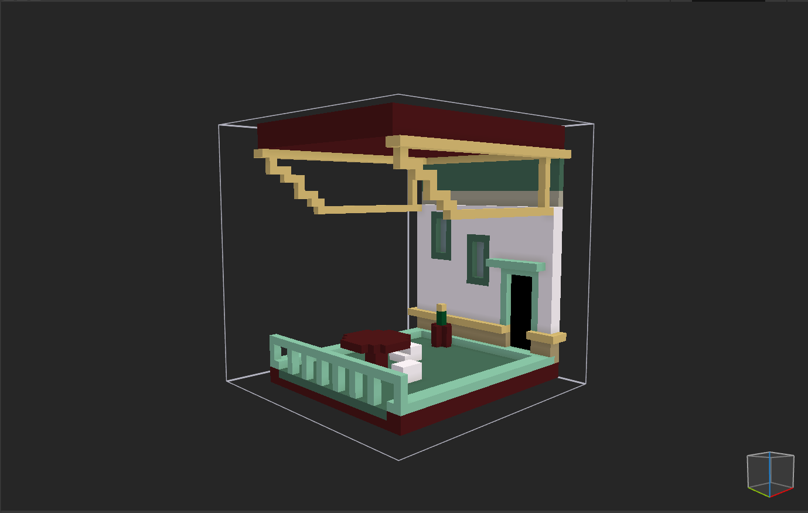
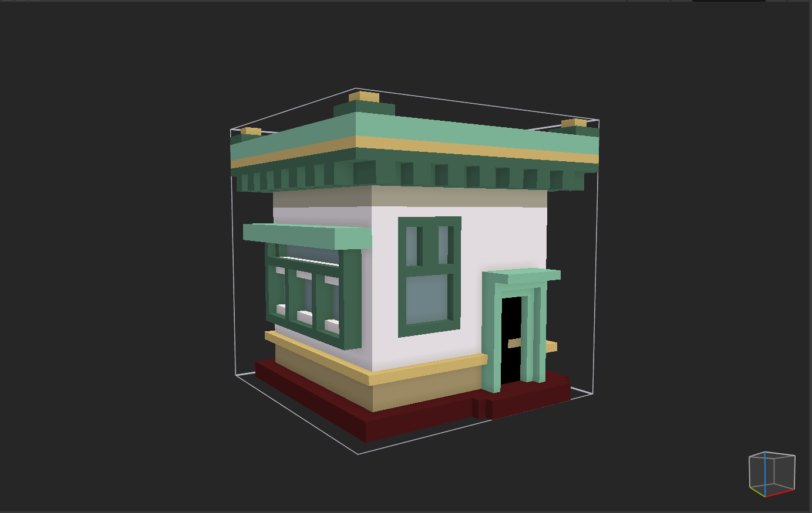
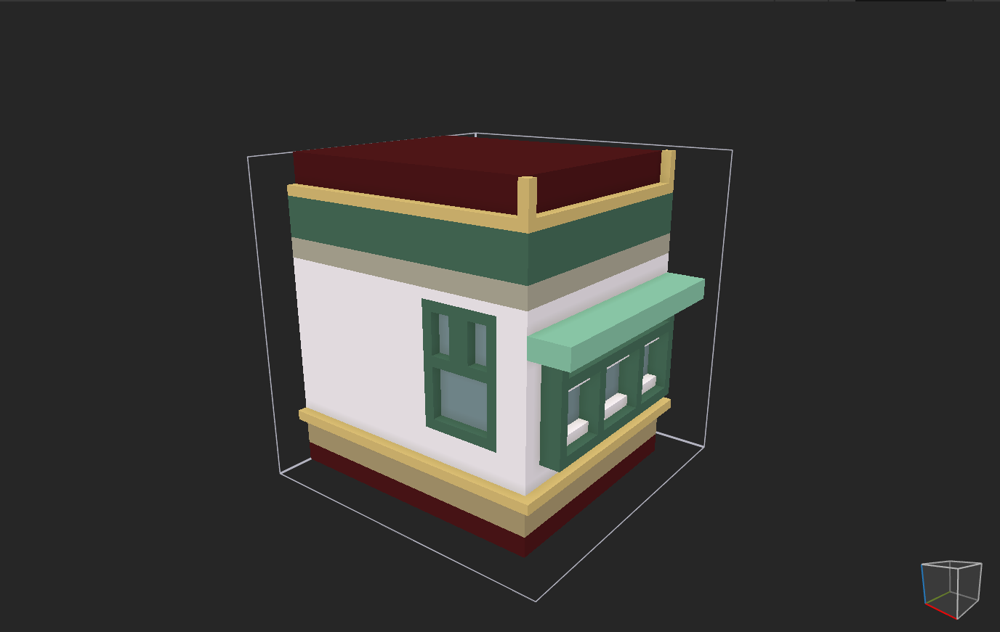
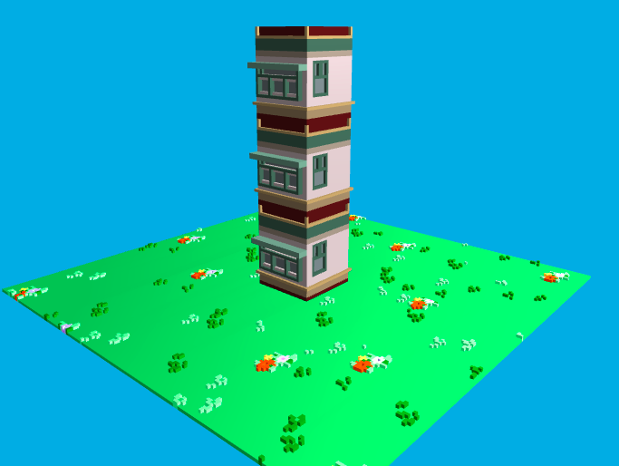
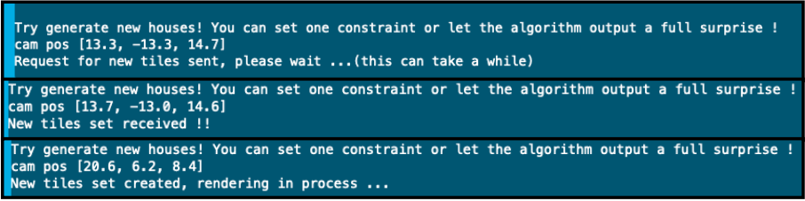
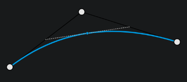
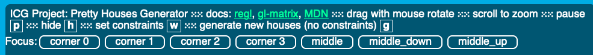

A project by Emmanuelle Denove, Louise Rieupouilh and Tom Demont
In Pretty Houses Generator, we wanted to create an app showing various tiles layout in a 3D world that are matching nicely with each other. The main part was the implementation of a Wave Collapse Function to output a valid layout of the tiles we created. We also wanted the app to be interactive to let the user discover and appreciate a visually appealing layout while having a hand on its creation.
We decided to create our project using the REGL pipelines and JavaScript to display it in browser using WebGL. Indeed we wanted our project to benefit all the WebGL advantages (GPU computation, portability ...) while being consistant with the tools we developped along the semester's exercices. From the tiles design to the user interface, we wanted to master all the steps of this processus and create a fully functionnal Pretty Houses Generator. We based our GLSL and JavaScript implementations of the Exercice 5: Solar Shading.
For the rendering of the tiles, we used MagicaVoxel [3], which was provided to us by the TAs. It was really fun and easy to use and it allowed us to create tiles in 3D for our project. All the tiles and the floor were made by us and so we had to pay attention when creating a new tile to how it was going to fit the others. We created tiles with roof, no roof, with door when the tile was put on the floor, no door and different positions (middle, left, right, corner). This allowed us to have a lot of different possibilities when using the wave collapse function to build a great variety of buildings.

creation of the balcony

base tile, first tile we created

variation of tile, no roof, getting attached to the left
For the rendering of our tiles, we created the file tiles.js where we took the basis of the
planets.js actors modelization. We could get rid of the physical (orbit, speed, size) aspects as we
just wanted to display 3D fixed tile actors. We then created the classes UnshadedTileActor,
PhongTileActor and MeshTileActor, each one inheritting the former. The only
modification with relation to the previous PlanetActors is in the computation of the
mat_model_to_world matrix.
Indeed, we added x, y and z attributes to place the tiles in a grid where
each tile would occupy one cell. This helped us to boilerplate the tiles placing in the algorithms by just
taking this 3D cells representations. The model matrix computation makes sure to rotate the tile facing the user
in default position and placing it correctly in the world: our tiles are \(32\times 32 \times 32\)px, observing
\(1\) unit length is \(10\)px, we created the correct translation matrix:
// Matrix to shift the tile on its coordinate (and put it above the ground).
//Each tile is 32px large, long and high. 1 length unit is 10px observed
let placingMatrix = mat4.fromTranslation(
mat4.create(),
vec3.fromValues(3.2 * this.x, 3.2 * this.z, 3.2 * this.y)
);
// Rotate the tile to avoid put it on its default rotation
let rotateMatrixX = mat4.fromXRotation(mat4.create(), Math.PI / 2);
let rotateMatrixY = mat4.fromYRotation(mat4.create(), Math.PI / 2);
const rotateMatrix = mat4_matmul_many(mat4.create(), rotateMatrixX, rotateMatrixY);
// Store the combined transform in this.mat_model_to_world
mat4_matmul_many(this.mat_model_to_world, sizeMat, rotateMatrix, placingMatrix);
Updating then the actors_list variable was just done by iterating over a given tiles
list giving tiles by their id (the prefix name of their object, material and texture files). This list also
contains the desired coordinates for the tile to ease its placement.
To add realism, we decided to adapt the shininess and ambient factor to the type of tile. The grass
tiles were less shiny than our other tiles and more ambiently brillant to compensate the shining loss:
function create_actor_list() {
// ...
const shine = tiles[i].id === 'grass' ? 1 : 14;
const amb = tiles[i].id === 'grass' ? 0.9 : 0.5;
// ..
}
The last added point was the rendering of empty tiles. Those are identified by and id air. We used
the already implemented pipeline_without_mesh implented in the MeshTileActor class to
render actors without mesh. In the actor creation, an air tile were assigned no mesh nor texture
while every other tile has its mesh and texture loaded synchronously (with await) and passed as
arguments to the constructor.
The remaining parts of the rendering pipeline are similar to the one used in the Exercice 5, using the
draw function of each tile to render it in the REGL canvas.

Example of tiles placed vertically in our world
Because it is a language that we are quite familiar with, we decided to implement the wave collapse function in Java. We then found a youtube video [4] explaining the structure of the code of this function, which we adapted to our project.
The principle of the wave collapse is that for every cell in the world, there is an array of possible tiles for
this cell. At the beginning, this array contains all tiles that we created. First, the arrays are restricted to
only contain tiles compatible with their z-position (i.e. cells at z = 0 can only contain tiles that can be
placed on the floor, and vice-versa for cells at z > 0). Then, a function finds the cell with the lowest
entropy, hence with the smallest possible tiles array, and calls the collapse function on it. This
function sets the tile of this cell to a random one within the array of possible tiles. This change is then
propagated, meaning that this cell’s neighbors adapt their own possible tiles list taking into consideration the
newly placed tile, and then notify their own neighbors to adapt their possible tiles array (i.e. the cell above
an “air” tile will also be an “air” tile since buildings cannot float, and that change will be propagated to its
own neighbors). This process is repeated until all cells have only one tile in their possible tiles array.
In order for the algorithm to know what other tiles a tile is compatible with, we used the principle of sockets
(more details on that below). We then create, at the launching of our function, a list of
TileCorrespondences. These store, for every one of our tiles (stored in the TilesDB
class), the list of tiles compatible with each side of the tile. This makes it a lot easier to access the tiles
that can be put in a certain cell depending on the cell’s neighboring tiles.
Every side of a tile has an associated socket, and two sides are compatible if and only if they have the same socket AND are corresponding sides (i.e. the left side of a tile can only be compatible with the right side of a tile, not with the top or bottom for example). The sockets were determined manually for every one of our tiles, and we currently have 20 different sockets.
We also introduced the concept of a door_side for tiles. This stores, as the name suggests, the side
on which there is a door (if any) for a given tile. When creating TileCorrespondences for tiles that have a
door, the only compatible tile with the door side is the “air” tile. This is because it seemed illogical to us
to be able to place tiles in front of doors, making the door inaccessible.
One of the main issues in our project was dealing with both the WebGL displaying using Web coding and the algorithm computation. Indeed, we tried to implement the WFC algorithm in JavaScript, but seing the toughness og the computation, we prefered to keep our initial working Java version. We then had to initiate a link between both applications, and following the ICG team advices, we implemented a client server architecture.
cors which masks the http request content. This seemed quite complicated to
override, so we settled on using the http requests only to notify the python server that the tiles are computed and
can be displayed. The Java takes care of writing the corresponding tile array in JSON form to a specific file that
the JavaScript then reads.
To query a new tiles set, we set on g key the call of a
query_new_tileset function. To deal with asynchronicity of our requests, we set boolean flags
received_new_tiles,querying_new_tiles and error_on_receive to indicate
the state of the query to the rendering pipeline. Indeed, we did not wanted to take the risk to display tiles
from a list being modified by 2 parts of the program. We then added if conditions in the frame
computation to avoid manipulating actors_list when the query is not fully complete.
We decided to wrap our query in a GET request, bu the issue we struggled with was the CORS of
fetch[1] queries. Indeed, we couldn't get without
authentification the GET RESULT of our query to the Java Server. To handle it, we made the the Java Server write
its output tiles' layout to tiles.json file. After that, we could load the JSON file and get the
tiles to display
Finally, we had to adapt our actors_list but also actors_by_name. To do so, we created
the create_actor_list and create_actor_corner_by_name that was called in the rendering
pipeline by putting the draw_list = actors_list.slice() line inside the frame computation.
With this whole process, we were able to, and with no concurrence major issue, call our Java server for updating our tiles set to place in world and adquatly render it on the g key pressing.
Finally, the user receives feedback on the tiles computation in the debug overlay to be informed if something
failed or is still being computed, displayed using our flags
received_new_tiles,querying_new_tiles and error_on_receive.

The feedback messages during the WFC query processing
Finally, we adapted our code to be able to handle and read GET requests where constrainted are specified by
index (a wrapper for the 3D coordinates of a tile) and an id, the file name of the
tile we want to set. These constraints were handled easily in computation by setting the desired tile at desired position and propagating the constraints update.
Seeing our visual result getting closer to what we expected, we decided that the extension of the camera to follow Bézier curve's path was perfectly adapted to add the smoothness we wanted.
To do so, we added many parameters with prefix old_ and new_. Those ones helped us to
specify the beginning and end values to be interpolated for the cam_distance_factor,
cam_angle_z and cam_angle_y. Those ones were not necessary for our pure Bézier curve
but we decided it would be smooth to also linearly lerp those values with the same time parameter as the
Bézier's. The visual result is that the camera rotates and goes back/forward whenever we change its position and
recenters on a nice position/rotation/distance.
Example of rotating and placing camera in linear interpolation
The key of the Bézier interpolation is the bezier_param that represents the time parameter \(t\)
that evolves from \(0\) to \(1\). Whenever the user asks for a new position to be selected, the
bezier_param value is set back to \(0\) and the new cam_distance_factor,
cam_angle_z and cam_angle_y are put in the new_ variables. When this
value gets back to \(1\), we know our update is done and we just apply the same transformation as before in the
previous Exercice 5 where camera just centers on a selected Actor.
We decided to put three control point in our Bézier paths as we were very satisfied with the result. Having those
3 meant that we had to take a starting point, old_selected_corner_position, and ending point
new_selected_corner_position and a middle point third_point_position. To have a
simetrical curve and create a curvy effect, we placed this point on the perpendicular bisector of the straight
line between start and end point. The shape aspect of our curve is displayed below.

The shape of our created Bézier curve (from the course's web slides) [2]
Once those points were computed, we could solve the quadratic equation using the de Castlejau algorithm [2]:
$$\textbf{x}(t)=(1-t)^2\textbf{b}_0+2(1-t)t\textbf{b}_1+t^2\textbf{b}_2$$ Where b points are
the controle points. Observing the vec3 class, we saw a method computing exactly the desired result
vec3.bezier(out, a, b, c, d, t). Observing that putting our third point in place of b
and c intermediary paramaters results in the same as having one middle paramater, we used it to
output the desired camera translation at every intermediary points between the old and new camera positions and
modify accordingly the mat_view matrix in the frame computation. We finally update our time to
simulate a time effect and make our paramter grow to \(1\).
The visual result looked very nice to us and we liked to move around our houses following thos curves.
Some examples of Bézier camera paths
We created to part for our user interface: the part for the user to navigate in our world by selecting tiles and the part to set constraints on WFC computation.
For the user interface, we wanted the user to be able to select the tiles to focus on. However, allow her to
select any tile as there were 75 of them were probably not good for the readibility of our interface. We then
created the corners_by_name and its sorted version sorted_corners_by_name to be able
to display the list of corners in the debug overlay. The "corners" are the tiles actors in corner coordinates
(all the maximized/minimized coordinates combinations) plus the tiles in the middle of the layout on middle,
bottom and top of \(Z\) axis. Similarly to the Exercice 5's actors_by_name list, pressing the
buttons sets the viewed corner as the selected one with an adapted camera rotation and distance. The Bézier
lerping could then start on next frames updates.

Tile selection interface
Our final amelioration of the project was setting a tile constraint by the user. We wanted this process to be interactive and intuitive. We created 2 sets of buttons for selecting the tile
Sadly, the computation of tiles can be quite slow. This is due to the randomization process : sometimes, cells are collapsed in a way that makes it impossible to fill the entire grid correctly, so the algorithm has to re-run quite a few times (this number completely depends on the randomization) in order to find a valid array of tiles that can fill the whole grid. An optimization that we had in mind but did not have time to implement was to write the initial array of possible tiles taking into consideration the tiles that could and couldn't be on the z = 0 plane into a local file that can be read, instead of recomputing this array at every iteration of the algorithm.
As described above, our project requires Java Server to run to compute new tiles sets. To launch the project, please be at the root of the project folder and run:
python3 -m http.server
while in another terminal running:
cd WaveCollapse_classes; java JavaServer
Each team member contributed equally and we were very happy to work together and face this huge project was made easier by the smoothness of interacting with each other. Here are the specialized part of each one of us: